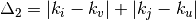

Algorithms¶
Schneider et al.¶
Class reference:
Schneider
- Select a pair of edges randomly and swap them
- If it has higher R, accept the swapping
- If not, try to swap again
See also
Configure parameters:
| Name | Default | Description |
|---|---|---|
| max_trials | 100 | The maximum number of swap trials |
Wu and Holme¶
Class reference:
WuHolme
Note
Too difficult to understand. I quit.
See also
Configure parameters:
| Name | Default | Description |
|---|---|---|
| max_trials | 100 | The maximum number of join process |
| a | 3 | Parameter in equation |
Sun et al.¶
Class reference:
Sun
Note
Too difficult to understand. I quit.
See also
Configure parameters:
| Name | Default | Description |
|---|---|---|
| max_trials | 100 | The maximum number of join process |
| Ng | 10 | The number of neighbor solutions |
| Nt | 6 | Length of tabu list |
Ichinose et al.¶
Class reference:
IchinoseSatotani
This algorithm aims to improve both robustness and degree correlation.
For each edges, calculate difference of degrees of endpoints defined as .
Select two edges by performing roulette selection.
Perform double edge swap using selected edges.
(Optional) for edges
 and
and  are selected,
there are two possible results( and
) from double edge swapping.
To increase network robustness and degree correlation, select
are selected,
there are two possible results( and
) from double edge swapping.
To increase network robustness and degree correlation, selectwhere and .
Accept swapping if there are no self loops, parallel edges, and not separated by swapping.
Configure parameters:
| Name | Default | Description |
|---|---|---|
| max_trials | 100 | The maximum number of trials |
| greedy | False | If true, always choose swap that makes higher degree correlation |